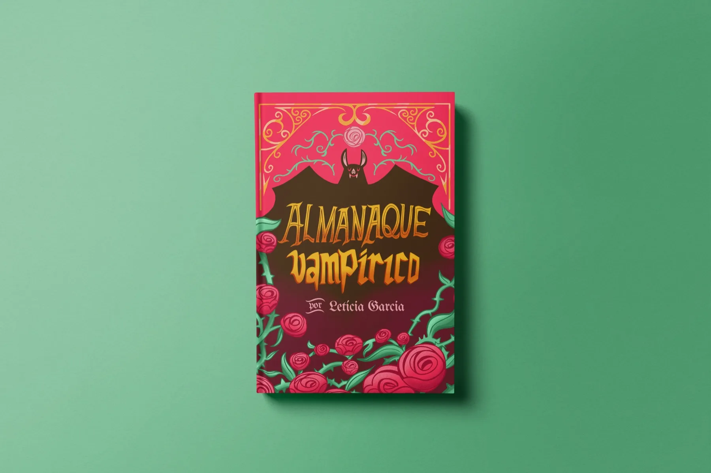
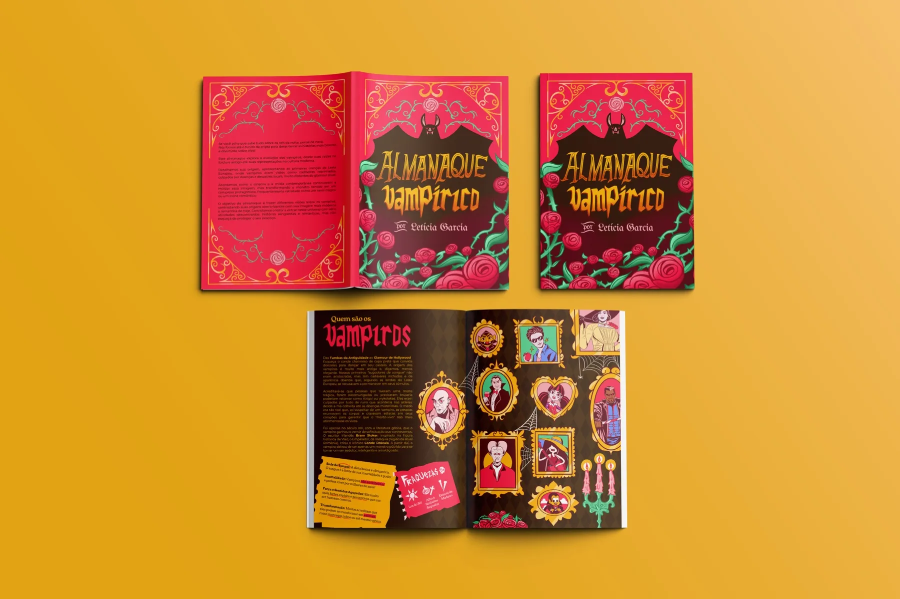
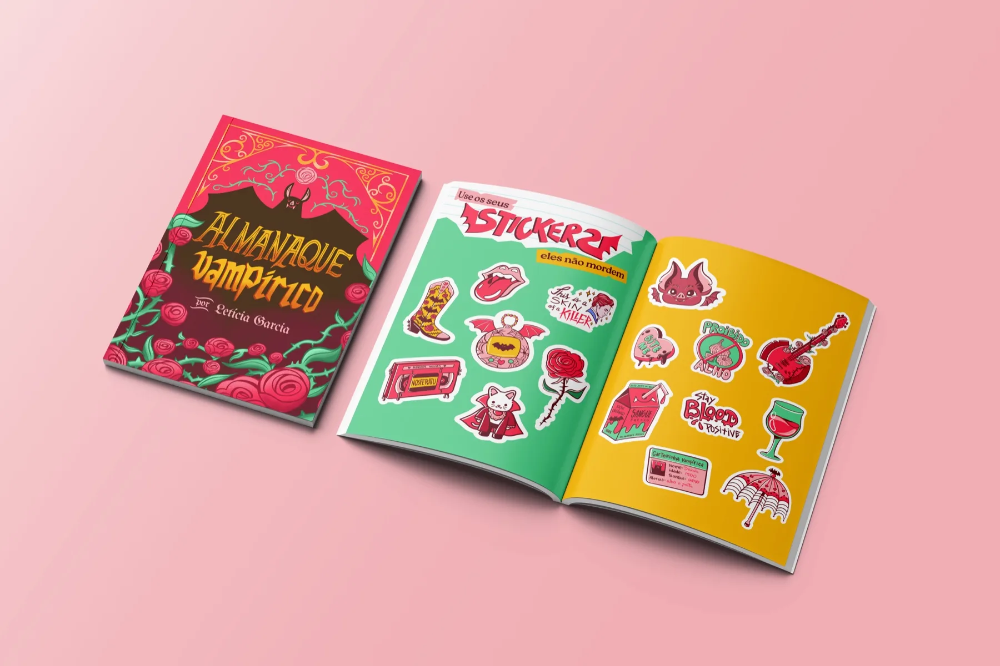
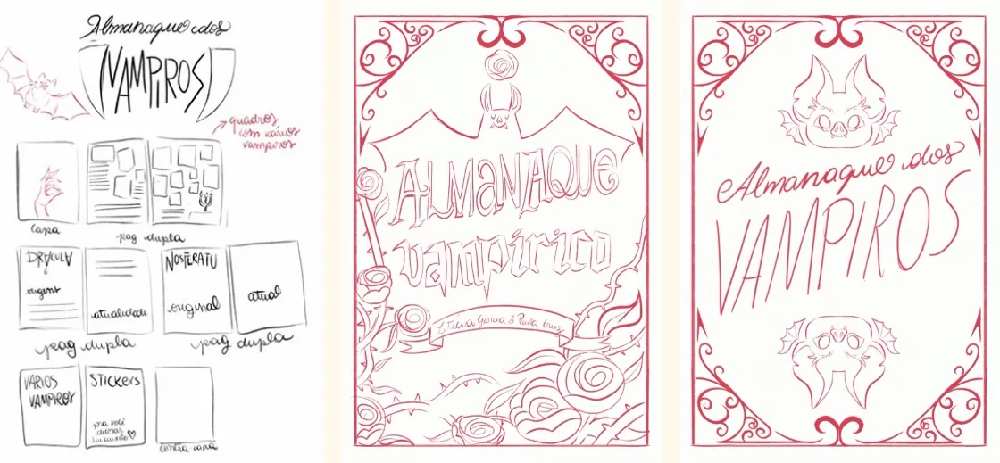
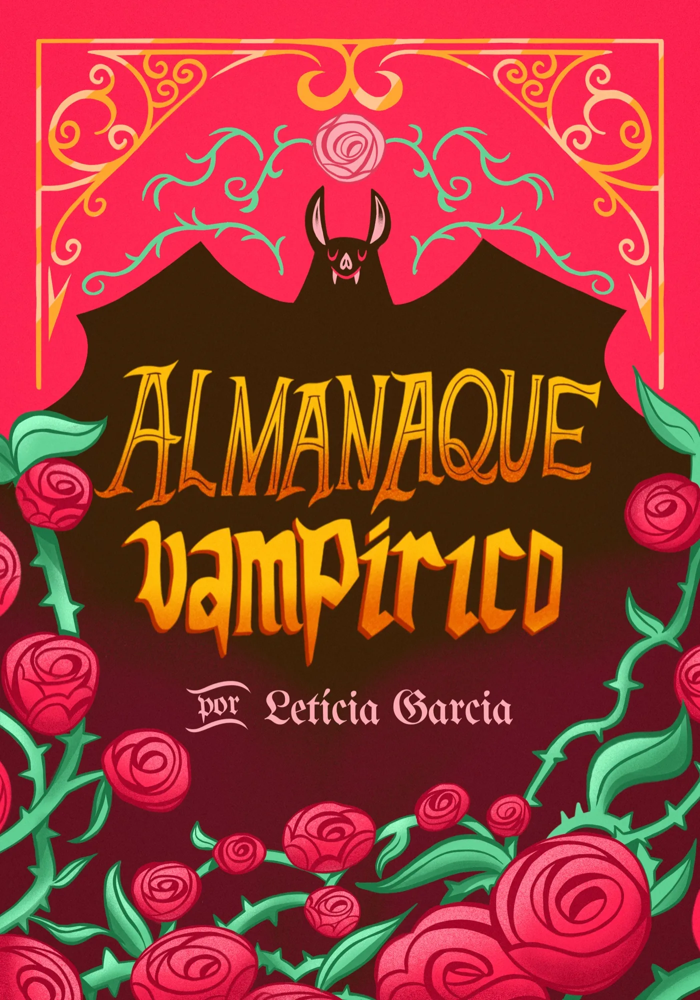
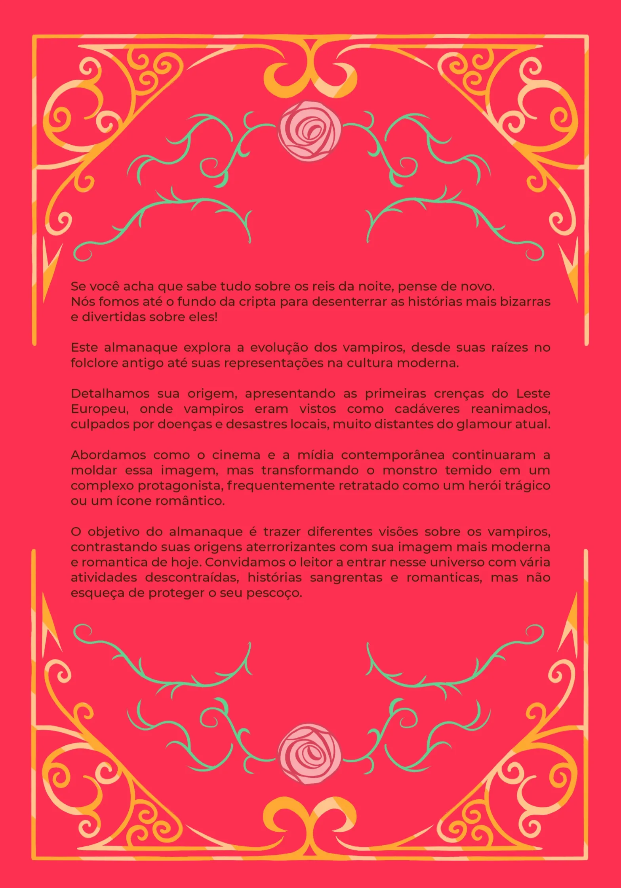
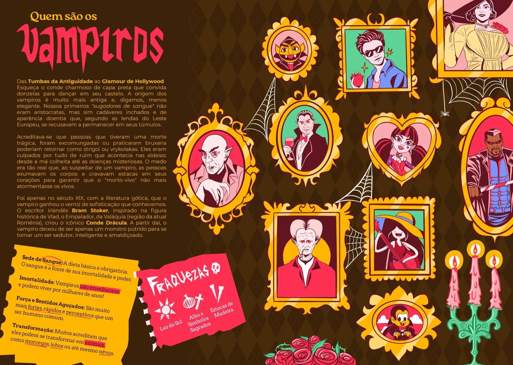
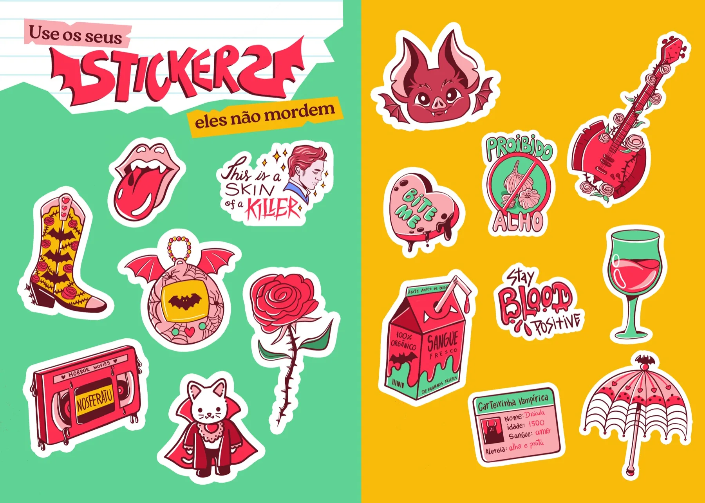
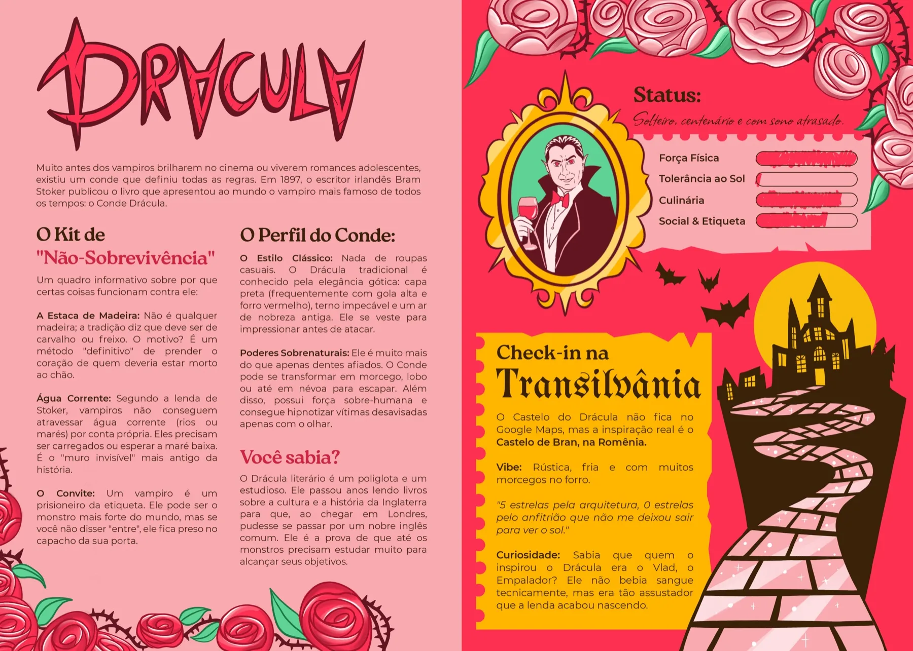

RGB: 252 41 80
CMYK: 0 84 68 1
HEX: FC2950
RGB: 255 189 14
CMYK: 0 26 95 0
HEX: FFBD0E
RGB: 113 219 159
CMYK: 48 0 27 14
HEX: 71DB9F
RGB: 60 34 9
CMYK: 0 43 85 76
HEX: 3C2209
RGB: 120 150 252
CMYK: 52 40 0 1
HEX: 7896FC
RGB: 249 169 176
CMYK: 0 32 29 2
HEX: F9A9B0





